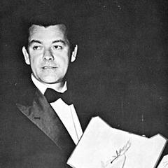

Latin Amerika Sineması
Meksika'dan ve Latin Amerika'dan gelen veya orada çalışan, sınıfı, mitleri ve siyaseti inceleyen film yapımcıları.
1960'ların Latin Amerikalı film yapımcıları sineması yoksulluğa ve sömürgeci bağımlılığa karşı bir silah olarak gördü. Glauber Rocha'nın “kafada bir fikir, elde bir kamera” sloganıyla Brezilya Cinema Novo'suna, Arjantin'de Fernando Solanas ve Octavio Getino'nun Üçüncü Sineması, Tomás Gutiérrez Alea ve Humberto Solás'ın Küba filmleri ve Jorge Sanjinés'in Bolivya'da yerli topluluklarla çalışması eklendi. Askeri diktatörlükler birçoğunu sürgüne zorladı, ama bölgenin sineması 1990'larda ve 2000'lerde Walter Salles, Alfonso Cuarón, Alejandro González Iñárritu, Guillermo del Toro, Lucrecia Martel ve Pablo Larraín ile geri döndü.
- Nerede
- Brezilya, Arjantin, Küba, Bolivya, Şili, Meksika ve ötesi
- Ne zaman
- 1950'lerden günümüze; 1960'larda ve 70'lerde siyasi zirve
- Önemli isimler
- Glauber Rocha, Nelson Pereira dos Santos, Tomás Gutiérrez Alea, Fernando Solanas, Jorge Sanjinés, Lucrecia Martel, Pablo Larraín
- Başyapıtlar
- Kara Tanrı, Beyaz Şeytan (1964), Azgelişmişlik Anıları (1968), Fırınların Saati (1968), Tanrı Şehri (2002)
- Miras
- Etkili bir siyasi, sömürgecilik karşıtı sinema modeli yarattı
Nelere bakmalı
- Yoksulluk, eşitsizlik ve siyasetin merkezi konular olması
- Düşük bütçeli, kaba ve bazen açıkça devrimci üslup
- Halk kültürü, tarih ve mitin karışımı
Ünlü Yönetmenler
 Luis Buñuelİspanya / Meksika
Luis Buñuelİspanya / Meksika Alejandro JodorowskyŞili / Fransa
Alejandro JodorowskyŞili / Fransa Alfonso CuarónMeksika
Alfonso CuarónMeksika Glauber RochaBrezilya
Glauber RochaBrezilya Tomás Gutiérrez AleaKüba
Tomás Gutiérrez AleaKüba Guillermo del ToroMeksika
Guillermo del ToroMeksika Alejandro G. IñárrituMeksika
Alejandro G. IñárrituMeksika Lucrecia MartelArjantin
Lucrecia MartelArjantin Fernando SolanasArjantin
Fernando SolanasArjantin Nelson Pereira dos SantosBrezilya
Nelson Pereira dos SantosBrezilya Walter SallesBrezilya
Walter SallesBrezilya Pablo LarraínŞili
Pablo LarraínŞili Carlos ReygadasMeksika
Carlos ReygadasMeksika Emilio FernándezMeksika
Emilio FernándezMeksika Claudia LlosaPeru
Claudia LlosaPeru José PadilhaBrezilya
José PadilhaBrezilya
Anselmo DuarteBrezilya Lorenzo VigasVenezuela
Lorenzo VigasVenezuela Raúl RuizŞili / Fransa
Raúl RuizŞili / Fransa Patricio GuzmánŞili
Patricio GuzmánŞili Fernando MeirellesBrezilya
Fernando MeirellesBrezilya Karim AïnouzBrezilya
Karim AïnouzBrezilya Kleber Mendonça FilhoBrezilya
Kleber Mendonça FilhoBrezilya Héctor BabencoArjantin / Brezilya
Héctor BabencoArjantin / BrezilyaTüm 35 yönetmeni gör


En iyi filmler · 197 film
- City of God 2002 · Fernando Meirelles · IMDb 8,6
- O Pagador de Promessas 1962 · Anselmo Duarte · IMDb 8,3
- The Battle of Chile 1979 · Patricio Guzmán · IMDb 8,3
- Los Olvidados 1950 · Luis Buñuel · IMDb 8,2
- Pan's Labyrinth 2006 · Guillermo del Toro · IMDb 8,2
- I'm Still Here 2024 · Walter Salles · IMDb 8,1
- Wild Tales 2014 · Damián Szifron · IMDb 8,1
- Viridiana 1961 · Luis Buñuel · IMDb 8,0
- Amores perros 2000 · Alejandro G. Iñárritu · IMDb 8,0
- The Revenant 2015 · Alejandro G. Iñárritu · IMDb 8,0
- Central Station 1998 · Walter Salles · IMDb 8,0
- Elite Squad 2007 · José Padilha · IMDb 8,0
- El 1953 · Luis Buñuel · IMDb 7,9
- The Exterminating Angel 1962 · Luis Buñuel · IMDb 7,9
- Pixote 1981 · Héctor Babenco · IMDb 7,9
- Children of Men 2006 · Alfonso Cuarón · IMDb 7,9
- Simon of the Desert 1965 · Luis Buñuel · IMDb 7,8
- That Obscure Object of Desire 1977 · Luis Buñuel · IMDb 7,8
- Bus 174 2002 · José Padilha · IMDb 7,8
- Nazarín 1959 · Luis Buñuel · IMDb 7,7
- The Discreet Charm of the Bourgeoisie 1972 · Luis Buñuel · IMDb 7,7
- The Phantom of Liberty 1974 · Luis Buñuel · IMDb 7,7
- The Holy Mountain 1973 · Alejandro Jodorowsky · IMDb 7,7
- Boca de Ouro 1963 · Nelson Pereira dos Santos · IMDb 7,7
- Y Tu Mamá También 2001 · Alfonso Cuarón · IMDb 7,7
- Gravity 2013 · Alfonso Cuarón · IMDb 7,7
- Birdman 2014 · Alejandro G. Iñárritu · IMDb 7,7
- The Motorcycle Diaries 2004 · Walter Salles · IMDb 7,7
- Un chien andalou 1929 · Luis Buñuel · IMDb 7,6
- Belle de Jour 1967 · Luis Buñuel · IMDb 7,6
- Enamorada 1946 · Emilio Fernández · IMDb 7,6
- Memories of Underdevelopment 1968 · Tomás Gutiérrez Alea · IMDb 7,6
- The Hour of the Furnaces 1968 · Fernando Solanas · IMDb 7,6
- Nostalgia for the Light 2010 · Patricio Guzmán · IMDb 7,6
- The Pearl Button 2015 · Patricio Guzmán · IMDb 7,6
- Carandiru 2003 · Héctor Babenco · IMDb 7,6
- Os Fuzis 1964 · Ruy Guerra · IMDb 7,6
- A Little Princess 1995 · Alfonso Cuarón · IMDb 7,6
- Roma 2018 · Alfonso Cuarón · IMDb 7,6
- 21 Grams 2003 · Alejandro G. Iñárritu · IMDb 7,6
- Behind the Sun 2001 · Walter Salles · IMDb 7,6
- The Two Popes 2019 · Fernando Meirelles · IMDb 7,6
- Pictures of Ghosts 2023 · Kleber Mendonça Filho · IMDb 7,6
- Endless Poetry 2016 · Alejandro Jodorowsky · IMDb 7,5
- The Last Supper 1976 · Tomás Gutiérrez Alea · IMDb 7,5
- Vidas Secas 1963 · Nelson Pereira dos Santos · IMDb 7,5
- Rio, 40 Degrees 1955 · Nelson Pereira dos Santos · IMDb 7,5
- A Queda 1978 · Ruy Guerra · IMDb 7,5
- The Castle of Purity 1973 · Arturo Ripstein · IMDb 7,5
- The Place Without Limits 1978 · Arturo Ripstein · IMDb 7,5
- Tiempo de valientes 2005 · Damián Szifron · IMDb 7,5
- Tristana 1970 · Luis Buñuel · IMDb 7,4
- La perla 1947 · Emilio Fernández · IMDb 7,4
- Santa Sangre 1989 · Alejandro Jodorowsky · IMDb 7,4
- The Dance of Reality 2013 · Alejandro Jodorowsky · IMDb 7,4
- Strawberry and Chocolate 1993 · Tomás Gutiérrez Alea · IMDb 7,4
- Tiempo de morir 1965 · Arturo Ripstein · IMDb 7,4
- Babel 2006 · Alejandro G. Iñárritu · IMDb 7,4
- Biutiful 2010 · Alejandro G. Iñárritu · IMDb 7,4
- Foreign Land 1995 · Walter Salles · IMDb 7,4
- No 2012 · Pablo Larraín · IMDb 7,4
- Aquarius 2016 · Kleber Mendonça Filho · IMDb 7,4
- Land Without Bread 1933 · Luis Buñuel · IMDb 7,3
- María Candelaria 1944 · Emilio Fernández · IMDb 7,3
- Entranced Earth 1967 · Glauber Rocha · IMDb 7,3
- Sur 1988 · Fernando Solanas · IMDb 7,3
- Mysteries of Lisbon 2010 · Raúl Ruiz · IMDb 7,3
- Kiss of the Spider Woman 1985 · Héctor Babenco · IMDb 7,3
- The Priest and the Girl 1966 · Joaquim Pedro de Andrade · IMDb 7,3
- Los inundados 1961 · Fernando Birri · IMDb 7,3
- The Devil's Backbone 2001 · Guillermo del Toro · IMDb 7,3
- The Shape of Water 2017 · Guillermo del Toro · IMDb 7,3
- The Constant Gardener 2005 · Fernando Meirelles · IMDb 7,3
- Bacurau 2019 · Kleber Mendonça Filho · IMDb 7,3
- José Martí: el ojo del canario 2010 · Fernando Pérez · IMDb 7,3
- Flor silvestre 1943 · Emilio Fernández · IMDb 7,2
- El Topo 1970 · Alejandro Jodorowsky · IMDb 7,2
- The Cordillera of Dreams 2019 · Patricio Guzmán · IMDb 7,2
- El coraje del pueblo 1971 · Jorge Sanjinés · IMDb 7,2
- The Club 2015 · Pablo Larraín · IMDb 7,2
- Silent Light 2007 · Carlos Reygadas · IMDb 7,2
- The Secret Agent 2025 · Kleber Mendonça Filho · IMDb 7,2
- Suite Habana 2003 · Fernando Pérez · IMDb 7,2
- L'Âge d'Or 1930 · Luis Buñuel · IMDb 7,1
- Black God, White Devil 1964 · Glauber Rocha · IMDb 7,1
- Barravento 1962 · Glauber Rocha · IMDb 7,1
- Tangos: The Exile of Gardel 1985 · Fernando Solanas · IMDb 7,1
- The Journey (1992) 1992 · Fernando Solanas · IMDb 7,1
- Three Crowns of the Sailor 1982 · Raúl Ruiz · IMDb 7,1
- Blood of the Condor 1969 · Jorge Sanjinés · IMDb 7,1
- Lucía 1968 · Humberto Solás · IMDb 7,1
- Deep Crimson 1996 · Arturo Ripstein · IMDb 7,1
- Linha de Passe 2008 · Walter Salles · IMDb 7,1
- Neighboring Sounds 2012 · Kleber Mendonça Filho · IMDb 7,1
- Antonio das Mortes 1969 · Glauber Rocha · IMDb 7,0
- Os Cafajestes 1962 · Ruy Guerra · IMDb 7,0
- Garrincha: Alegria do Povo 1962 · Joaquim Pedro de Andrade · IMDb 7,0
- The Conspirators 1972 · Joaquim Pedro de Andrade · IMDb 7,0
- Manuela 1966 · Humberto Solás · IMDb 7,0
- Nightmare Alley 2021 · Guillermo del Toro · IMDb 7,0
- La ciénaga 2001 · Lucrecia Martel · IMDb 7,0
- Madame Satã 2002 · Karim Aïnouz · IMDb 7,0
- Mundo Grúa 1999 · Pablo Trapero · IMDb 7,0
- Leonera 2008 · Pablo Trapero · IMDb 7,0
- Graciela 1956 · Leopoldo Torre Nilsson · IMDb 6,9
- El crimen de Oribe 1950 · Leopoldo Torre Nilsson · IMDb 6,9
- Guantanamera 1995 · Tomás Gutiérrez Alea · IMDb 6,9
- Time Regained 1999 · Raúl Ruiz · IMDb 6,9
- Three Sad Tigers 1968 · Raúl Ruiz · IMDb 6,9
- Hellboy 2004 · Guillermo del Toro · IMDb 6,9
- The Clan 2015 · Pablo Trapero · IMDb 6,9
- The Amulet of Ogum 1974 · Nelson Pereira dos Santos · IMDb 6,8
- At Play in the Fields of the Lord 1991 · Héctor Babenco · IMDb 6,8
- Macunaíma 1969 · Joaquim Pedro de Andrade · IMDb 6,8
- Conjugal Warfare 1975 · Joaquim Pedro de Andrade · IMDb 6,8
- Sólo con tu pareja 1991 · Alfonso Cuarón · IMDb 6,8
- Great Expectations (1998) 1998 · Alfonso Cuarón · IMDb 6,8
- The Holy Girl 2004 · Lucrecia Martel · IMDb 6,8
- Tony Manero 2008 · Pablo Larraín · IMDb 6,8
- Neruda 2016 · Pablo Larraín · IMDb 6,8
- Japón 2002 · Carlos Reygadas · IMDb 6,8
- Our Time 2018 · Carlos Reygadas · IMDb 6,8
- Madeinusa 2006 · Claudia Llosa · IMDb 6,8
- La libertad 2001 · Lisandro Alonso · IMDb 6,8
- El Bonaerense 2002 · Pablo Trapero · IMDb 6,8
- Carancho 2010 · Pablo Trapero · IMDb 6,8
- Días de odio 1954 · Leopoldo Torre Nilsson · IMDb 6,7
- Los siete locos 1973 · Leopoldo Torre Nilsson · IMDb 6,7
- Fando and Lis 1968 · Alejandro Jodorowsky · IMDb 6,7
- How Tasty Was My Little Frenchman 1971 · Nelson Pereira dos Santos · IMDb 6,7
- Ironweed 1987 · Héctor Babenco · IMDb 6,7
- Cronos 1993 · Guillermo del Toro · IMDb 6,7
- Bardo, False Chronicle of a Handful of Truths 2022 · Alejandro G. Iñárritu · IMDb 6,7
- Zama 2017 · Lucrecia Martel · IMDb 6,7
- Ema 2019 · Pablo Larraín · IMDb 6,7
- The Milk of Sorrow 2009 · Claudia Llosa · IMDb 6,7
- Los muertos 2004 · Lisandro Alonso · IMDb 6,7
- Clandestinos 1987 · Fernando Pérez · IMDb 6,7
- Madagascar 1994 · Fernando Pérez · IMDb 6,7
- Eréndira 1983 · Ruy Guerra · IMDb 6,6
- Ópera do Malandro 1986 · Ruy Guerra · IMDb 6,6
- Cantata de Chile 1975 · Humberto Solás · IMDb 6,6
- A Successful Man 1985 · Humberto Solás · IMDb 6,6
- Jackie 2016 · Pablo Larraín · IMDb 6,6
- From Afar 2015 · Lorenzo Vigas · IMDb 6,6
- The Box 2021 · Lorenzo Vigas · IMDb 6,6
- To Catch a Killer 2023 · Damián Szifron · IMDb 6,6
- The Age of the Earth 1980 · Glauber Rocha · IMDb 6,5
- Bleak Street 2015 · Arturo Ripstein · IMDb 6,5
- Crimson Peak 2015 · Guillermo del Toro · IMDb 6,5
- The Headless Woman 2008 · Lucrecia Martel · IMDb 6,5
- Post Mortem 2010 · Pablo Larraín · IMDb 6,5
- Spencer 2021 · Pablo Larraín · IMDb 6,5
- Post Tenebras Lux 2012 · Carlos Reygadas · IMDb 6,5
- Blindness 2008 · Fernando Meirelles · IMDb 6,5
- Motel Destino 2024 · Karim Aïnouz · IMDb 6,5
- White Elephant 2012 · Pablo Trapero · IMDb 6,5
- Life Is to Whistle 1998 · Fernando Pérez · IMDb 6,5
- Genealogies of a Crime 1997 · Raúl Ruiz · IMDb 6,4
- King of the Night 1975 · Héctor Babenco · IMDb 6,4
- Maria 2024 · Pablo Larraín · IMDb 6,4
- Fantasma 2006 · Lisandro Alonso · IMDb 6,4
- Liverpool 2008 · Lisandro Alonso · IMDb 6,4
- The Lion Has Seven Heads 1970 · Glauber Rocha · IMDb 6,3
- Such Is Life 2000 · Arturo Ripstein · IMDb 6,3
- El Conde 2023 · Pablo Larraín · IMDb 6,3
- Futuro Beach 2014 · Karim Aïnouz · IMDb 6,3
- Jauja 2014 · Lisandro Alonso · IMDb 6,3
- Martín Fierro 1968 · Leopoldo Torre Nilsson · IMDb 6,2
- Jubiabá 1986 · Nelson Pereira dos Santos · IMDb 6,2
- ORG 1979 · Fernando Birri · IMDb 6,2
- The Brazilwood Man 1982 · Joaquim Pedro de Andrade · IMDb 6,1
- RoboCop 2014 · José Padilha · IMDb 6,1
- Mimic 1997 · Guillermo del Toro · IMDb 6,0
- On the Road 2012 · Walter Salles · IMDb 6,0
- Eureka 2023 · Lisandro Alonso · IMDb 6,0
- Cecilia 1981 · Humberto Solás · IMDb 5,9
- The Rainbow Thief 1990 · Alejandro Jodorowsky · IMDb 5,8
- Cabezas Cortadas 1970 · Glauber Rocha · IMDb 5,8
- Dark Water 2005 · Walter Salles · IMDb 5,6
- Battle in Heaven 2005 · Carlos Reygadas · IMDb 5,5
- Madrigal 2006 · Fernando Pérez · IMDb 5,5
- Aloft 2014 · Claudia Llosa · IMDb 5,3
- A Very Old Man with Enormous Wings 1988 · Fernando Birri · IMDb 5,2
- Pinocchio (2022) 2022 · Guillermo del Toro · IMDb 5,1
- Elite Squad: The Enemy Within 2010 · José Padilha
- El enemigo principal 1973 · Jorge Sanjinés
- Suely in the Sky 2006 · Karim Aïnouz
- Tent of Miracles 1977 · Nelson Pereira dos Santos
- The Cloud 1998 · Fernando Solanas
- The Invisible Life of Eurídice Gusmão 2019 · Karim Aïnouz
- Memorias del saqueo 2004 · Fernando Solanas
- Ukamau 1966 · Jorge Sanjinés
- Memories of Prison 1984 · Nelson Pereira dos Santos
- Tire dié 1960 · Fernando Birri
- Vereda da Salvação 1965 · Anselmo Duarte
- ¡Fuera de aquí! 1977 · Jorge Sanjinés